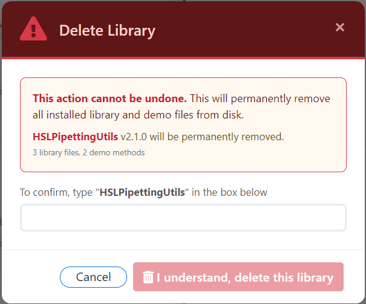

Overview
Venus Library Manager provides a safe, controlled delete workflow that removes library files from disk, handles COM DLL deregistration considerations, and maintains deletion history by default.
GUI Delete Workflow
- Click on a library card to open the Library Detail Modal
- Click the Delete button
- A confirmation dialog appears showing:
- Library and demo install paths that will be affected
- COM DLL deregistration implications (if applicable)
- An explicit warning that this action is irreversible for disk files
- Type the exact library name to unlock the delete button
- If audit-enforcement settings are enabled, provide required audit comment/signature fields
- Confirm to proceed with deletion

Audit Field Validation Rules
- Comment: At least 26 characters, includes a space, includes more than 10 letters, and includes at least one 2+ letter sequence.
- Signature: Longer than 4 characters and includes at least one space.
- These fields are shown only when enabled in Settings.
What Happens During Deletion
The delete process performs these steps in order:
1. COM Deregistration (GUI only)
If the library has registered COM DLLs, the GUI optionally performs deregistration via RegAsm.exe /unregister before removing files. If deregistration fails, you can choose to continue or cancel the deletion.
Note: The CLI does not automatically deregister COM DLLs. You must run RegAsm.exe /unregister <dll> manually with administrator privileges.
2. File Removal
All library files and help files are deleted from the library install path. All demo method files are deleted from the demo install path. If the directories are empty after file removal, they are also deleted.
3. Database Record Update
By default, the database record is soft-deleted: the deleted flag is set to true and a deleted_date timestamp is recorded. This preserves deletion history so you can see what was previously installed.
4. Group Cleanup
The deleted library is removed from any group assignments in the navigation tree.
Soft Delete vs. Hard Delete
| Mode | Disk Files | DB Record | Description |
|---|---|---|---|
| Soft Delete (default) | Removed | Marked deleted=true | History is preserved. The library appears with a "deleted" badge if --include-deleted is used in list-libs. |
Hard Delete (--hard) | Removed | Permanently removed | No history retained. The record is completely erased from the database. |
Keep Files (--keep-files) | Left intact | Removed or soft-deleted | Only the database entry is affected. Disk files remain in place. |
CLI Delete
See CLI: delete-lib for full command documentation.
System Library Protection
Warning: Hamilton system libraries (built-in libraries that ship with VENUS) are protected and cannot be deleted. Attempting to delete a system library via the GUI or CLI will result in an error: SYSTEM_LIBRARY_READ_ONLY.
Recovery Options
Once library files are deleted from disk, they cannot be recovered through Venus Library Manager unless:
- The original
.hxlibpkgfile is available for re-import - A cached version exists in the package store from a previous import
- A
.hxlibarchbackup archive contains the library
Audit Trail
Every deletion (both GUI and CLI) is automatically recorded in the persistent audit trail (audit_trail.json). The entry captures the Windows username, Windows OS version, VENUS version, hostname, library name, version, and delete type (soft or hard). When configured for GUI destructive actions, action_comment and action_signature are also recorded. See Library Audit Log for details.